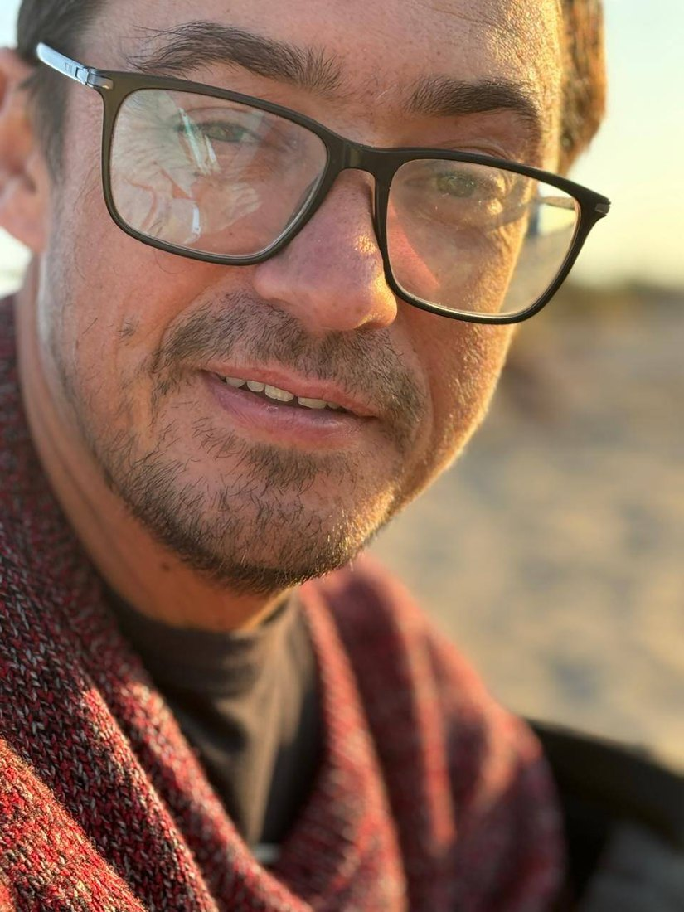

Mosaic
Byzantine and contemporary mosaic in smalti and ceramic — the craft behind fifteen years of icon and church work, taught one tessera at a time.
Oil Painter & Art Teacher · Grand Bend, Ontario
Landscapes of Lake Huron and warm still lifes in oil and acrylic — and small painting classes by the water.
Original works are shown at Sunset Arts Gallery, River Road, Grand Bend. To enquire about an available piece, send a message on Instagram or by email.
Workshops at the South Huron Arts Centre in Exeter, in three directions — for adult beginners and improvers. Relaxed, patient, all materials provided, and built so every session sends you home with a finished piece.
Byzantine and contemporary mosaic in smalti and ceramic — the craft behind fifteen years of icon and church work, taught one tessera at a time.
Nature printing with real leaves and plants, layered with acrylic and texture — playful, forgiving, and full of small surprises.
Lake Huron sunsets, forests, and still lifes in acrylic — colour, light, and a little confidence for first-time painters.
Workshop dates, fees, and sign-up are handled through SHAC — new sessions are posted through the season.
Schedule & registration
Born and trained in Odesa, Ukraine. I graduated from K. D. Ushinsky University, Faculty of Art and Graphics — my diploma project a Byzantine mosaic icon, Mother of God of Tenderness, in smalti and fired ceramic. For two years I taught at the Kostandi Art School for Children in Odesa.
Fifteen years of professional mosaic work followed, across Ukraine, Moldova, and Romania — church apses, icons, and monumental installations, laid one tessera at a time. Painting and mosaic have run side by side throughout — brush and smalti, two materials, one practice.
Today, on the shores of Lake Huron near Grand Bend, the work is painterly: warm, naturalistic still lifes and Ontario landscapes in oil and acrylic. Originals show at Sunset Arts Gallery in Grand Bend, and I teach painting classes in Exeter.
For commissions — pet portraits and custom work — send a direct message on Instagram or write by email, and I'll reply within a few days.